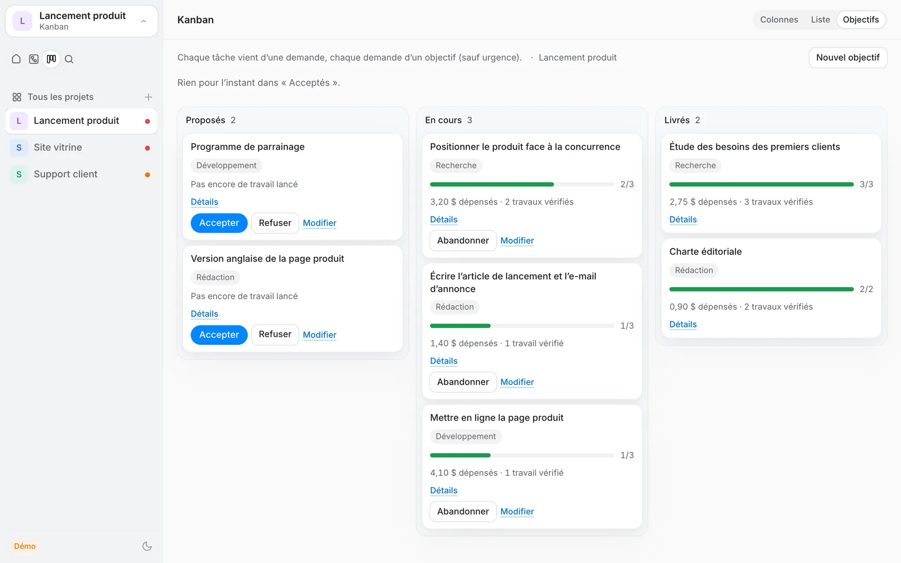

En arrivant, ce qui t'attend. Rien d'autre.
« À toi » réunit les questions et les échecs qui demandent ta décision, avec le bon bouton à côté. « Depuis ta dernière visite » montre ce qui a été livré, avec la preuve et le coût.

Made for Production and Real Projects.
Agent Scale fait travailler, depuis ton Mac, les agents IA que tu utilises déjà (Claude Code, Codex, Gemini CLI, Kimi) comme une vraie équipe, sur un tableau blanc : des chefs répartissent le travail et le vérifient, toi tu ne décides que de l'essentiel, et tout reste en local.
Version 0.1.476 · En développement actif · macOS

Pour qui
Tu utilises Claude Code, Codex, Gemini CLI ou Kimi dans le Terminal, et plusieurs agents tournent en même temps ? Agent Scale les réunit sur un seul écran, sans remplacer tes outils : chacun garde ses modèles et sa connexion.
Chaque agent a sa carte, son statut en direct et sa discussion. Les compteurs du haut ouvrent tour à tour ceux qui sont en cours, en échec ou qui attendent une action.
Chaque projet a son propre arbre d'agents ; un dossier qui contient plusieurs dépôts Git devient un espace de travail.
Ce que le chef peut décider à ta place, nombre d'agents en même temps, actions qui demandent ton accord : c'est toi qui choisis, projet par projet.
Fonctions
Nouveau
Avec un seul réglage, le chef de chaque équipe valide le travail, répond aux questions et donne les autorisations en ton nom. Il y a une courte liste de choses qu'il ne touchera jamais.
Tout ce qu'il tranche s'affiche dans « Décidé à ta place ». Tu peux revenir dessus quand tu veux.
Quand une question arrive jusqu'à toi : une notification du Mac avec un son, et un iMessage sur ton téléphone si tu l'as réglé.

« À toi » réunit les questions et les échecs qui demandent ta décision, avec le bon bouton à côté. « Depuis ta dernière visite » montre ce qui a été livré, avec la preuve et le coût.
L'agent pose sa question avec des choix tout prêts. Les chefs portent trois chiffres sur leur carte : ce que coûte un travail, ce qui passe du premier coup, et la part faite par le chef.

Ta demande devient des tâches : à faire, en cours, à vérifier, vérifié. Chaque livraison est essayée par un agent neuf qui cherche à la casser ; rien n'est « fini » sans preuve.

Au-dessus des tâches, chaque objectif dit le problème à régler, ce qui n'est pas au programme et le chef qui le porte. Les chefs proposent, tu acceptes ou tu refuses, et tu vois ce qu'il a coûté.

Par chef, par agent et par outil : le coût d'un travail vérifié et la part de dépense qui a vraiment servi. Montré, jamais un plafond : les agents ne s'arrêtent pas pour une question de dépense.

Captures de l'app en mode démo, avec des données d'exemple.
Les cartes montrent en direct ce que fait chaque agent. Clique sur une carte pour ouvrir son chat ; glisse le fond pour te déplacer, glisse une carte pour déplacer sa branche. « Niveaux 1 · 2 · Tout » choisit la profondeur affichée, « Ranger » replace toutes les cartes.
L'orchestrateur (Claude Code) crée des sous-agents, leur délègue des tâches, attend leurs résultats et te pose ses questions dans une carte « Valider / Refuser ». À la création d'un projet, il constitue son équipe à partir du brief.
La to-do réunit ce que tu as demandé ; l'orchestrateur la découpe en tâches et les confie aux agents. Le plan s'affiche en kanban « À faire · En cours · À valider · Terminé » ou en liste, avec la tâche suivante et celles qu'elle attend.
Importe un dossier : l'app y retrouve les sessions de Claude Code et de Codex et en fait des agents. Tu choisis quelle discussion devient l'orchestrateur ; l'historique permet de reprendre une discussion terminée ou de rejoindre un agent qui tourne encore.
Si un dossier contient plusieurs dépôts Git (GitHub, GitLab…), l'app propose d'en faire un espace de travail : un sous-projet par dépôt coché, et un orchestrateur principal qui coordonne les orchestrateurs des sous-projets. Tu peux aussi importer plusieurs dossiers à la fois.
« Améliorer l'organisation » fait le bilan du projet et propose ses conseils. L'agent Organisateur pose 1 à 3 questions, puis envoie une seule proposition (chantiers, modèles…). Tu valides avant que rien ne change, et « Annuler » remet tout comme avant.
Par projet : priorité (qualité, équilibre, rapidité, économie), agents en même temps, pilote automatique, « Le chef décide à ma place » et « Me demander avant de… » modifier, lancer des commandes, supprimer ou aller sur Internet. Avec Claude Code, une vraie carte « Autoriser / Refuser » attend ta réponse.
Le serveur local n'écoute que sur ton Mac. Projets, réglages et discussions restent sur ton Mac ; rien n'est envoyé à un serveur extérieur. Chaque outil garde ses modèles et sa connexion : l'app ne stocke pas de clés.
Chaque chef garde sa to-do : une demande confiée à l'équipe reste ouverte jusqu'à la fin de toutes ses tâches. Chaque fonctionnalité livrée a un lien « Voir » pour l'ouvrir directement.
Quand un agent a besoin d'un accord, son chef décide d'abord, puis le chef du dessus, et la décision n'arrive à la personne qu'en dernier recours.
Écrire à un agent occupé ne renvoie plus d'erreur : le message est gardé, lu à la fin de son tour, et son chef est prévenu.
Dans le Kanban, la présentation « Objectifs » liste les paris de l'équipe : problème, hors périmètre, chef qui le porte, avancement et coût. Partagés entre les projets d'un espace de travail.
Jetons par tour, indicateurs par agent et par chef, et une vue « Consommation » pour savoir où part la dépense. Montrée, jamais un plafond.
Crée tes propres agents. Les données confidentielles ne sont confiées qu'aux agents habilités.
Des actions que les agents ne font jamais, même en « tout autoriser », vérifiées aussi dans les scripts lancés.
Des centaines de lignes deviennent quelques décisions, regroupées par cause et par action, avec une confirmation et 6 secondes pour annuler. Les autorisations ne se valident jamais en bloc.
Suis une demande de bout en bout sur une seule frise : demandée, découpée par le chef, qui s'en occupe en direct, livrée, validée et par qui.
L'équipe avance sans t'attendre : les tâches prêtes se lancent, celles coupées par un redémarrage reprennent, un échec est relancé une fois.
Dès 3 agents, chacun travaille dans sa propre copie du projet : personne n'écrase le travail d'un autre. Tout rejoint le projet une fois validé.
Processeur, mémoire et disque sont surveillés toutes les 5 secondes. Si le Mac sature, les nouveaux départs attendent leur tour ; rien n'est coupé en cours de route.
Invisible, sans fenêtre qui surgit. Tu vois son écran en direct et tu peux « Prendre la main ». Les agents refusent de remplir un mot de passe ou une carte bancaire.
Les fichiers trop lourds ne partent pas sur Git par erreur, et une alerte prévient avant de dépasser la place prévue chez ton hébergeur.
Branche le serveur « agent-scale » dans ton Claude Code : il suit les projets, écrit aux agents et répond à leurs questions. Jamais de suppression ni d'autorisation : ça reste à toi.
| Outil | Lire les sessions | Envoyer |
|---|---|---|
| Claude Code | Oui | Oui |
| Codex CLI | Oui | Oui |
| Gemini CLI | Oui | Oui |
| Kimi CLI | Oui | Oui |
| Cursor, Qwen Code, OpenCode | Détection seulement | |
Accès
Agent Scale est en développement actif et n'est pas encore ouvert au public. Il tourne sur un Mac, avec Claude Code installé et connecté, et tout reste en local.
Nouveautés
Version actuelle : 0.1.476.
« Le chef décide à ma place », actif par défaut et réglable par projet : le chef valide le travail de son équipe, répond aux questions de ses agents et donne les autorisations du quotidien en ton nom. Restent toujours à toi : te connecter, payer, effacer l'historique, supprimer en dehors du projet, et la sécurité. Ce qu'il tranche s'affiche dans « Décidé à ta place ». Une question qui arrive jusqu'à toi déclenche une notification du Mac avec un son, et un iMessage si tu l'as réglé, une seule fois par question. Aussi : les vérifications en lecture seule (récupérer les nouveautés, lire une demande de fusion) ne demandent plus d'accord, les agents ne peuvent plus envoyer de fichiers trop lourds sur Git, et le site vitrine montre de vraies captures de l'app.
Un redémarrage ne crée plus d'agents en double : arrêt propre, aucun départ pendant l'arrêt, reprise courte. Une grande équipe ne s'enchaîne plus en file indienne : un agent n'attend un autre que s'ils modifient le même fichier. Pour choisir qui fait quoi, le chef voit les agents en place, les modèles et les agents sur mesure, avec une recommandation. « Concentrer sur son équipe » pâlit tout le reste du tableau. Un bouton « Lancer dans le Terminal » apparaît sur les commandes, avec confirmation et avertissement si elle est risquée. Les questions dépassées se replient toutes seules.
Il n'y a plus de budget qui coupe le travail : la dépense reste visible partout, mais n'est jamais un plafond. Une limite d'utilisation atteinte met l'agent en pause, puis il reprend tout seul : ce n'est plus un échec. Le navigateur des agents est devenu invisible, sans fenêtre ni dialogue qui surgit à l'écran. « Une copie par agent » : dès 3 agents, chacun travaille dans sa propre copie du projet, livrée à la validation. Les commandes sans danger (lire, tester, construire, enregistrer) ne te demandent plus rien, et toute suppression reste demandée. L'accueil d'un projet met le chef au centre.
La barre ne garde que quatre vues : Accueil, Tableau, Kanban et Recherche. La feuille de route devient la présentation « Objectifs » du Kanban, l'historique passe dans la recherche, et la vue Équipes rejoint le Tableau. Sur le tableau, les échanges entre agents se voient en direct : un trait bleu qui descend quand le chef confie une tâche, et remonte quand on lui répond. Une barre montre la mémoire utilisée par chaque agent. Un bac à sable (OpenShell, de NVIDIA) peut isoler un projet ; il est éteint par défaut.
Un défaut encore ouvert n'apparaît jamais en vert, chaque coût est expliqué, et un seul compte s'affiche. « Validé malgré un échec » n'apparaît plus que pour un vrai échec non résolu, et disparaît dès que la preuve rejouée passe. Les agents n'abandonnent plus leurs longues suites de tests en fin de tour.
« Contrôle indépendant » : quand une fonctionnalité est livrée, un agent neuf, qui ne l'a pas construite, l'essaie sur une copie isolée (il peut lancer l'app, ne modifie jamais rien, coût plafonné à 2 $ par défaut), puis cherche à la casser. Ses constats reviennent au chef de l'équipe et s'affichent sur la carte de récapitulatif (« Contrôlé : 2 défauts, tous corrigés »). À l'usage, il a trouvé de vrais défauts. Le récapitulatif est pensé pour une longue absence : un titre par projet, ce qui a besoin de toi en haut, le reste regroupé et replié, et « Tout marquer vu » seulement pour le travail vérifié et prouvé.
« Ce qui a été livré cette nuit » sur l'accueil : pour chaque demande, ce qui a changé, la preuve résumée en une ligne (par exemple « 319 tests réussis · compilation réussie · 2 captures »), le coût, qui l'a fait, « Ouvrir l'app », puis « Tout est bon » ou « Renvoyer avec une remarque ». Une validation honnête : un chef ne peut plus valider en silence un travail dont les tests échouent encore, il doit donner une raison, qui t'est montrée. Le coût de chaque demande inclut maintenant le travail du chef lui-même. La page se remet à jour toute seule après une coupure de connexion. Et la sécurité a été renforcée à la suite d'une revue indépendante.
« Retour du matin » : le coût depuis ta dernière visite vient en premier, avec « Voir la consommation depuis ta visite ». Les comptes s'additionnent, et les travaux en cours de vérification par les chefs sont listés. Une preuve honnête : une carte affiche « preuve annoncée, non jointe » quand l'agent dit avoir lancé des tests sans rien joindre. Les vues Équipes et Historique disent ce qui a été livré et ce que ça a coûté, avec des titres simples. Les noms de modèles sont en mots clairs (« Opus 5.5 »), les réglages ne se redessinent jamais pendant que tu tapes, la page se rétablit toute seule quand le Mac est très occupé, et l'écran d'un agent n'est jamais laissé vide.
« Programmes oubliés » : Agent Scale repère un programme qu'un agent a laissé tourner seul et qui mobilise le processeur, et te propose « Arrêter » ou « Laisser tourner ». L'accueil est plus clair : les choix pour un programme lancé hors de l'app sont dans la page au lieu de la recouvrir, les erreurs de chargement disent pourquoi et quoi faire, la feuille de route cache les colonnes vides, et les mots sont plus simples partout. Plus de fiabilité : les serveurs de test s'arrêtent d'eux-mêmes, et les anciens tours échoués restent à leur date dans la conversation.
Les alertes sur téléphone sont honnêtes : Agent Scale vérifie que iMessage fonctionne, sinon il dit « seulement sur ce Mac ». Après le test, il demande « Reçu sur ton téléphone ? Oui / Non », décrit le canal tel qu'il est (iMessage via Apple) et montre un vrai exemple d'alerte. La relecture rapide ne peut plus être sautée en cliquant vite : une carte compte comme vue après 1,2 s ou après une action explicite. « Ouvrir le dossier » est sur les cartes de relecture, et l'action du dossier parent met à jour la liste des blocages tout de suite.
« Prévenir sur mon téléphone » : désactivé par défaut. Tu choisis ton destinataire et quand être prévenu (quelque chose t'attend, une équipe est bloquée, un résumé quotidien). Les messages partent par iMessage en local ou par une notification du Mac, groupés et plafonnés, avec des heures de calme, et jamais par un service dans le nuage. Aussi : toute la suite de tests tourne maintenant de façon fiable, avec 1 252 tests réussis.
Avant « Tout valider », une relecture rapide : une carte par travail (ce qui a été fait, la preuve, « Voir »), que tu valides, renvoies ou passes. Le lot en attente est gardé par le serveur : il survit à un rechargement, avec une barre pour annuler. « Choisir le dossier » remplace un « Relancer » inutile, et une estimation du coût s'affiche avant « Tout relancer ». Un seul dossier parent peut servir à plusieurs projets à la fois. L'alerte « aucune équipe » de l'organisateur apparaît dans « À toi ».
Des centaines de lignes deviennent quelques décisions, regroupées par cause et par action, par exemple « 343 bloquées : dossier manquant → Choisir une fois » ou « 18 déjà vérifiés → Tout valider », avec une confirmation et 6 secondes pour annuler. Les autorisations ne se valident jamais en bloc. Aussi : un seul sens pour « À toi », tes demandes en premier dans la To-do sur téléphone, une feuille de route compacte à grande échelle, une carte claire quand l'organisateur ne propose aucune équipe, et la carte « Commencer » qui se cache une fois que tu as commencé.
Agent Scale tient désormais 1 200 agents et 20 000 tâches : le démarrage passe de 37 s à 7 s, la page ne se fige plus (moins de 1,5 s), et l'accueil comme la vue Équipes s'affichent en quelques millisecondes. Les sauvegardes sont plus sûres : elles partent du dernier état vérifié.
Le coût est mis en regard du travail vérifié, par demande et par objectif. Un message explique l'attente de l'Organisateur après la création d'un projet. Les noms des vues s'affichent sur écran tactile, avec des mots plus simples. Les contrôles de qualité sont bien plus rapides : partagés entre tâches, conservés après un redémarrage, et une suite de tests trop longue n'est plus reprochée à l'agent. Les tours ne sont plus coupés par erreur par les estimations de budget. Les agents ne font que ce qui leur est demandé.
Nouveau : depuis la To-do, l'accueil ou un objectif de la feuille de route, ouvre une demande et suis-la de bout en bout sur une seule frise : demandée, découpée par le chef, qui s'en occupe en direct, livrée (Voir), validée par qui, objectif atteint. Aussi : l'assistant des outils propose ton premier projet, et « équipe lancée » ne s'affiche que si c'est vrai.
Les icônes de navigation affichent leur nom. L'équipe reste visible juste après le lancement. Les contrôles de qualité montrent leur durée, et le chef est prévenu quand l'un d'eux dure trop longtemps. Les essais en cours s'arrêtent proprement avec Agent Scale. Des mots plus simples pour les nouveaux (« Ce que tu veux obtenir », « objectif », « Mac disponible »). Un travail livré sans lien montre ses fichiers et un bouton « Ouvrir le dossier ».
Une carte « Commencer » au premier lancement, en 3 étapes : outils prêts, un projet à partir d'un dossier, ta première demande. L'encadré « Depuis ta dernière visite » reste caché à la toute première visite. Les longues consignes données à un chef sont repliées, sans identifiants internes. L'objectif validé apparaît comme ta première demande dans la To-do et sur la feuille de route.
L'accueil d'un projet montre « En ce moment » (seulement ce qui bouge), le reste tenant sur une ligne. L'équipe reçoit toujours ta demande comme objectif, même si l'organisateur ne la reformule pas. Un message gardé pendant le tour d'un agent ne disparaît plus quand le chat se recharge.
La To-do se lit d'un coup d'œil, avec « À vérifier » à la place de « Réponse reçue ». Un travail qui a passé le contrôle automatique n'est plus marqué « sans preuve ». L'encadré « Depuis ta dernière visite » cite le dernier vrai compte rendu de l'orchestrateur principal.
Des contrôles de qualité plus justes : une suite de tests déjà cassée avant une tâche n'est plus reprochée à l'agent. La To-do d'un espace de travail montre le plan de l'orchestrateur principal, et l'accueil d'un projet montre le travail qui lui est confié. L'encadré « Depuis ta dernière visite » se met à jour juste après une décision. Un seul chiffre de coût par travail vérifié. Les anciens échecs sont repliés et peuvent être classés. La feuille de route tient sur un téléphone. Deux messages envoyés coup sur coup gardent leur ordre.
La feuille de route se remplit toute seule à partir de tes demandes confiées à l'équipe, et son avancement suit les tâches. Chaque demande de la To-do indique le pari de la feuille de route auquel elle appartient. L'ensemble des tests automatiques a été remis en état.
Les agents s'écrivent aussi en français entre eux. Les autorisations expirées disparaissent des cartes ; une autorisation en attente au redémarrage est notée « Abandonnée ». Un chef peut fusionner une précision dans la demande d'origine. La vue Équipes affiche « Attend l'accord de » son chef. Les outils qui ne peuvent pas demander d'accord expliquent pourquoi, en mots simples.
L'encadré « Depuis ta dernière visite » ne montre que ce qui est vraiment pour toi, regroupé par projet (3 lignes, puis « voir les autres »). Les blocages et le coût sont comptés depuis ta dernière visite. Refuser renvoie le travail au chef. Un travail sans preuve demande confirmation avant d'être validé. Une tâche arrêtée affiche « Arrêtée ». Les titres de l'historique sont lisibles.
Les coûts sont les mêmes sur l'accueil et dans Consommation. Consommation s'ouvre sur une phrase simple : combien en 30 jours, combien de travaux vérifiés, combien par travail vérifié. Un clic sur « Aujourd'hui » ouvre Consommation. Le travail validé par un chef pendant ton absence apparaît « à revoir » dans l'encadré « Depuis ta dernière visite ».
Un encadré « Depuis ta dernière visite » en haut de l'accueil : ce qui a besoin de toi (avec Valider / Refuser), ce qui a été livré (avec Voir), ce qui est bloqué (avec Relancer), et le coût par projet depuis ta dernière visite.
Une commande d'agent qui dure plus de 10 minutes est signalée, et son chef est prévenu. Les contrôles de qualité lisent correctement les résultats de tests récents. Avec le pilote automatique, les chefs peuvent valider le travail eux-mêmes ; la personne le relit ensuite dans « À tester ».
Glisse un projet sur un autre projet, ou sur un espace de travail, dans la barre latérale pour les regrouper. Agent Scale propose un seul changement clair (rejoindre l'espace, ou créer un espace autour des deux) ; tu confirmes, et tu peux l'annuler. Au clavier : la touche M.
Sur téléphone, la to-do s'ouvre en liste. Les liens « Voir » fonctionnent au clavier. Un orchestrateur dont l'équipe travaille encore affiche « Suit son équipe » au lieu de « Terminé ».
Le chat masque les notes techniques. Les messages entre agents écrits en anglais sont signalés. Les autorisations se lisent mieux : la carte du chef dit qu'il doit décider, l'agent affiche « Attend l'accord de » son chef, la carte de demande se ferme après la décision, et les mots sont simples.
Les états des tâches sont les mêmes partout : « Prête, pas lancée », « Arrêtée » (un arrêt voulu n'est plus un échec) et « Réponse reçue ». La vue Équipes d'un espace de travail montre une colonne par projet, avec toute son équipe.
Les agents écrivent toujours à la personne en français. Quand l'aperçu de l'application échoue, la raison est expliquée en mots simples. Le nombre d'agents est le même sur tous les écrans. Les messages venant d'autres agents s'affichent « De » suivi du nom, sans notes techniques.
Un chef resté inactif alors qu'il a du travail terminé à vérifier reçoit un rappel. L'aperçu de l'application prévient quand elle date d'avant les derniers changements, avec un bouton pour demander un redémarrage. Un nouveau projet sans dossier en reçoit un automatiquement, et une erreur de dossier mène droit au bon champ.
Les demandes d'autorisation montent du chef d'une application jusqu'à l'orchestrateur principal de l'espace avant d'atteindre la personne. Un message tapé pendant qu'un agent travaille n'est jamais perdu : il est mis « en attente » et envoyé à la fin de son tour.
Le superviseur peut reprendre un tour interrompu, sans jamais l'écarter. Les retours vus en direct sont listés pour être traités.
Un message envoyé à un agent occupé est gardé et lu à la fin de son tour ; son chef est prévenu. Fini « Agent occupé ».
To-do des chefs : une demande confiée à l'équipe reste ouverte jusqu'à la fin de ses tâches. Lien « Voir » par fonctionnalité, titres de cartes lisibles.
Autorisations par le chef : il décide d'abord, puis son chef, puis la personne. Le chef est prévenu dès qu'un message l'attend.
Les orchestrateurs portent le nom de leur projet. Pages à jour sans recharger. Possibilité de renommer un projet.
Vue Équipes, Feuille de route, vue Consommation, agents sur mesure, ajout d'un chantier en action directe.
Organisateur : il propose des chantiers, l'aperçu se voit sur le tableau, « Annuler cette organisation » remet tout comme avant.